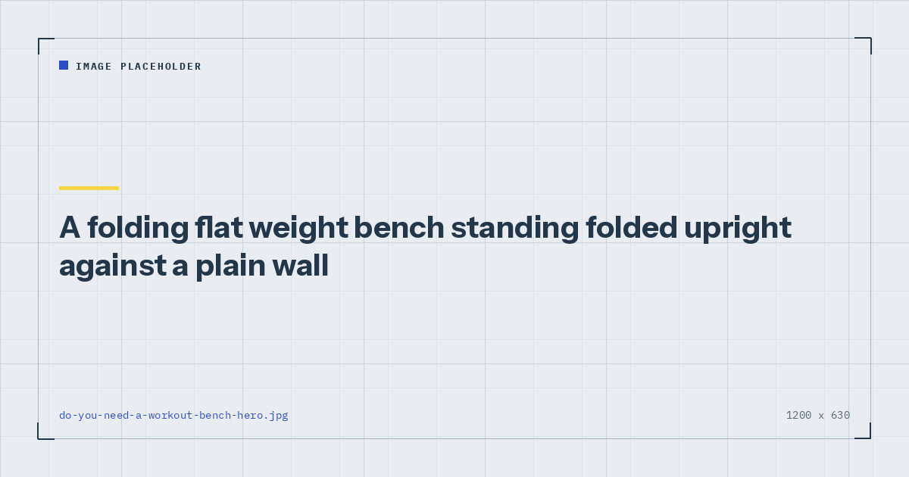

Minimal Gear
Do You Need a Bench for Home Workouts?
A bench unlocks fewer exercises than people expect and costs more floor space than almost anything else you could buy. For most home trainees the answer is no.

A bench feels like a foundational piece of equipment because gyms are full of them. At home, with bodyweight training as the base, it unlocks a narrower set of exercises than most people assume — and it is physically the largest thing you are likely to buy.
What a bench actually unlocks
Four things, honestly counted.
1. Dumbbell bench press. The main one. Pressing with a full range below shoulder level, which the floor prevents because your elbows hit it. If your goal is chest development with dumbbells, this is a real gain.
2. Incline pressing. If the bench adjusts. Changes the emphasis toward the upper chest and shoulders.
3. Supported single-arm rows. A knee and hand on the bench with the other arm rowing. More stable than hinging freely, which lets you use more weight.
4. Elevated feet or hands for step-ups, split squats, dips and decline push-ups — at a consistent, purpose-built height.
That is the complete list. Notice how much of it is dumbbell-specific: if you do not own dumbbells, a bench unlocks almost nothing that a chair does not.
What substitutes for it
A sturdy dining chair covers the fourth category entirely. Step-ups, split squats, dips, decline push-ups, incline push-ups — all work on a chair, and the whole approach is covered in dips at home and Bulgarian split squats at home.
The floor covers pressing, with a caveat. A floor press stops when your upper arms touch the ground, which removes the bottom portion of the range. That is a genuine reduction, though it is also easier on the shoulders and some people prefer it.
Two chairs or a sofa edge can create a bench-like surface, though stability is a real concern and I would not press a heavy dumbbell lying across two chairs.
A stack of books or a low step gives you the elevation for single-leg work at an adjustable height, which is arguably better than a fixed bench — see stair workouts for the same logic applied to a staircase.
The real cost: floor space
A flat bench is roughly 120 by 35 centimetres in use, and a folding one still needs somewhere to stand when folded. In a one-bedroom flat that is a meaningful fraction of the training area itself — the measurements are in how much floor space you need.
There is also a friction cost that gets overlooked. Equipment that must be unfolded and positioned before a session is equipment that adds steps between deciding to train and starting, and those steps are where sessions get lost. That is the argument made in setting up a home gym corner, and it applies to a bench more than to anything else because a bench is the hardest item to leave permanently in place.
Without dumbbells, a bench unlocks nothing a dining chair does not. With dumbbells, it unlocks one exercise that genuinely matters.
Who genuinely needs one
Yes, buy one if: you own a pair of dumbbells and chest development is a priority; you have space to leave it out; and you have already solved pulling with a bar or bands.
No, do not, if: you train primarily with bodyweight; you own one dumbbell or none; you live in a small flat; or you have not yet bought resistance bands or a pull-up bar. In those cases the bench is the wrong item at the wrong point in the buying order — which is set out in the minimalist home gym guide.
The honest framing: a bench is a late purchase for someone whose home training has grown into dumbbell work, not an early one for someone building a base. Light loads taken close to failure produce comparable muscle growth to heavy ones,1 and push-ups progressed properly cover the chest well for a long time — the ladder is in how to build chest muscle without weights.
If you do buy one
Adjustable rather than flat, if the price difference is modest. Incline pressing is most of the additional value.
Check the weight rating includes your bodyweight plus whatever you will hold. Ratings are often quoted for the load only.
Check the folded dimensions, not just the in-use ones. A bench that folds to something you cannot store is a bench that stays out.
Check the pad width. Narrow pads allow more shoulder blade movement, which many people prefer; wide pads are more comfortable. Neither is wrong.
Avoid very cheap folding benches with visible flex under load. A bench that moves while you press a weight above your face is not somewhere to economise.
What to buy instead
For the same money or considerably less, in order of what adds more to a home setup:
Resistance bands — solve pulling, the one genuine gap in bodyweight training, and cover overhead pressing that a bench does not. See the resistance bands guide.
A doorway pull-up bar — unlocks rows and eventually pull-ups. See the doorway pull-up bar guide.
An adjustable dumbbell — if you have neither, this adds more than a bench would, and a bench without dumbbells is nearly useless anyway. See the adjustable dumbbells buying guide.
Furniture sliders — cost almost nothing and unlock hamstring work that nothing else does. See furniture sliders.
Making the floor press work properly
Since the floor press is what most home trainees use instead of a bench, it is worth setting up well rather than treating it as a compromised version of something else.
Lie on your back with knees bent and feet flat. Start with the dumbbell at arm's length above your chest, lower until your upper arm rests on the floor, pause for a full second, then press. The pause is important: without it people bounce the triceps off the floor, which removes the hardest part of the repetition.
Two genuine advantages over a bench press worth knowing. The floor limits shoulder extension, which makes it considerably easier on the shoulder joint — a reasonable option for anyone with a history of shoulder irritation. And it is safer without a spotter, because a failed repetition means setting the weight down beside you rather than being trapped under it.
The disadvantage is the missing bottom range, where the chest is most stretched and where a good deal of the growth stimulus is thought to come from. You can partly compensate by adding a slow four-second lowering phase and pausing, and by covering the stretched position with deficit push-ups instead — the progression is in how to build chest muscle without weights.
The short version
If you train mainly with bodyweight, the answer is no, and it will stay no for a long time. If you have grown into dumbbell training and have the floor space, a bench is a reasonable next purchase — but it should come after bands, a pull-up bar and the dumbbells themselves, because each of those unlocks a movement pattern rather than a range of motion.
Adult activity guidance asks for muscle-strengthening work covering all major muscle groups on two or more days a week.2 Nothing in that requires a bench, and the chest is comfortably trainable without one for years.
Where to go next
For the full buying order, see the minimalist home gym guide. For a complete list at a fixed budget, see the home gym under $100.
Frequently asked questions
Do I need a weight bench at home?
Only if you already own dumbbells and chest development is a priority. Without dumbbells, a bench unlocks almost nothing that a sturdy dining chair does not, and it is physically the largest thing most people consider buying.
What can I use instead of a workout bench?
A sturdy dining chair covers step-ups, split squats, dips and elevated push-ups. The floor covers pressing, though a floor press removes the bottom portion of the range because your elbows hit the ground.
Is a floor press as good as a bench press?
It removes the bottom portion of the range, which is a genuine reduction in stimulus. It is also easier on the shoulders, and some people prefer it for that reason. For most home trainees the difference matters less than whether the sets are hard.
How much space does a workout bench take?
Roughly 120 by 35 centimetres in use, and a folding one still needs somewhere to stand when folded. In a one-bedroom flat that is a meaningful fraction of your entire training area.
What should I buy instead of a bench?
Resistance bands first, since they solve pulling and cover overhead pressing that a bench does not. Then a doorway pull-up bar, then an adjustable dumbbell, then furniture sliders. All add more to a home setup than a bench does.
Sources and further reading
- Schoenfeld BJ, Grgic J, Ogborn D, Krieger JW. “Strength and Hypertrophy Adaptations Between Low- vs. High-Load Resistance Training: A Systematic Review and Meta-analysis.” Journal of Strength and Conditioning Research, 2017;31(12):3508–3523. PubMed.
- World Health Organization. WHO Guidelines on Physical Activity and Sedentary Behaviour. 2020.
- Schoenfeld BJ, Ogborn D, Krieger JW. “Dose-response relationship between weekly resistance training volume and increases in muscle mass: A systematic review and meta-analysis.” Journal of Sports Sciences, 2017;35(11):1073–1082. PubMed.
- NHS. Strength and Flex exercise plan.
Comments
Comments are not enabled yet. Add a hosted comment embed (Disqus, Commento, Giscus) inside this container when you are ready.